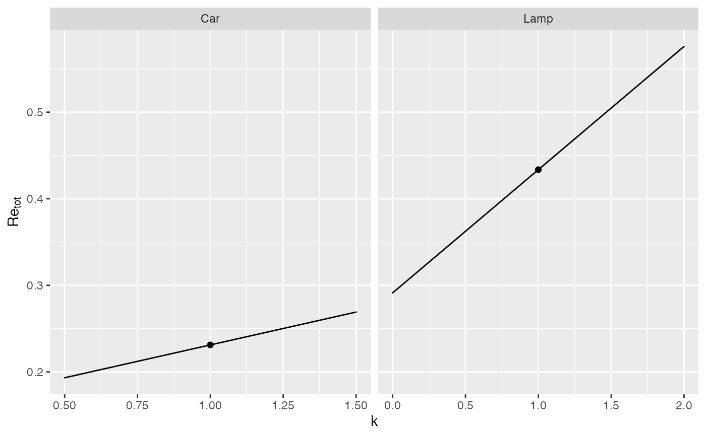
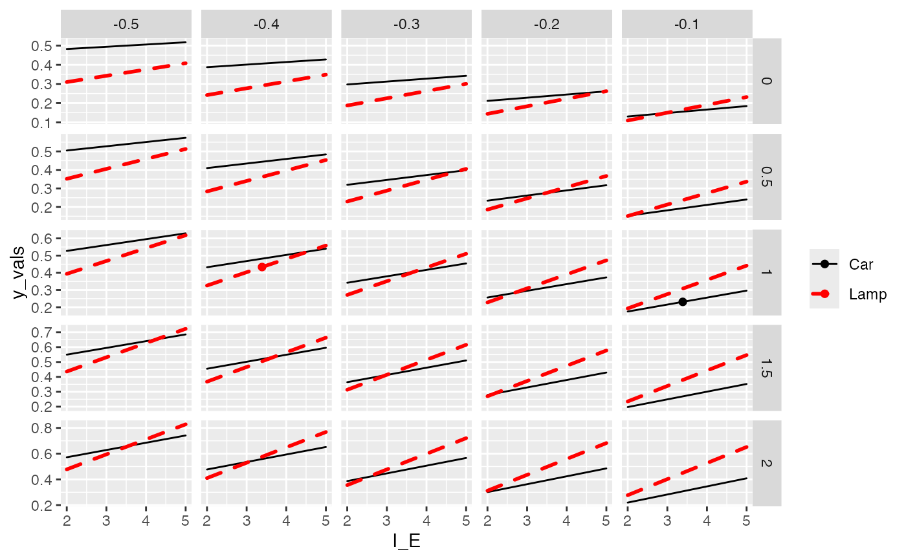
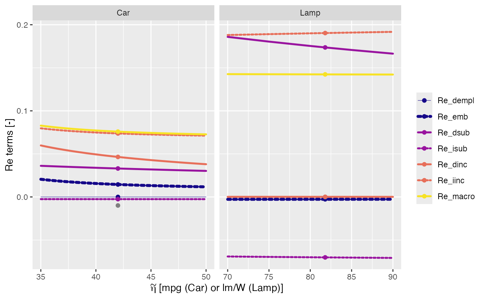

sensitivity_graphs.RdA function to make sensitivity graphs for rebound analysis.
sensitivity_graphs( .parametric_data = parametric_analysis(rebound_data, parameterization), rebound_data = NULL, parameterization = NULL, x_var, y_var, line_var = y_names_col, y_names_col = ReboundTools::graph_df_colnames$y_names_col, y_vals_col = ReboundTools::graph_df_colnames$y_vals_col, graph_params = ReboundTools::sens_graph_params, point_type_colname = ReboundTools::parametric_analysis_point_types$point_type_colname, sweep_points = ReboundTools::parametric_analysis_point_types$sweep, orig_points = ReboundTools::parametric_analysis_point_types$orig )
| .parametric_data | A data frame, likely the result of calling |
|---|---|
| rebound_data | Rebound data, likely read by |
| parameterization | A list of lists that gives parameter sweeps.
At the top level, the list items must be named for cases in |
| x_var, y_var | Strings that identify the x-axis and y-axis variables for this sensitivity graph.
These variables must appear in |
| line_var | The name of variable to be used to discriminate lines on the graph.
Default is |
| y_names_col, y_vals_col | |
| graph_params | A list of parameters to control graph appearance.
See |
| point_type_colname, sweep_points, orig_points |
A ggplot2 object.
The caller can adjust the aesthetics of the graph with manual scales.
The order of y_var will determine layering on the graph.
The first item in y_var will be the lowest layer.
The last item in y_var will be the highest layer.
# Sensitivity of total rebound (Re_tot) to macro multiplier (k) df <- load_eeu_data() sens_params <- list(Car = list(k = seq(0.5, 1.5, by = 0.5)), Lamp = list(k = seq(0, 2, by = 1))) sensitivity_graphs(rebound_data = df, parameterization = sens_params, x_var = "k", y_var = "Re_tot") + ggplot2::facet_wrap(facets = "Case", scales = "free_x") + ggplot2::scale_colour_manual(values = c(Re_tot = "black"), guide = FALSE) + ggplot2::scale_size_manual(values = c(Re_tot = 0.5), guide = FALSE) + ggplot2::scale_linetype_manual(values = c(Re_tot = "solid"), guide = FALSE) + ggplot2::labs(y = expression(Re[tot]), colour = ggplot2::element_blank(), size = ggplot2::element_blank(), linetype = ggplot2::element_blank())# A more-complicated example that shows multi-variate sensitivity. # Values of the macro parameter (k) are shown in rows of the lattice plot. # Uncompensated price elasticity of energy service consumption (e_qs_ps_UC) # is shown in columns of the lattice plot. # Total rebound (Re_tot) is given on the y-axis, and # energy intensity of the economy (I_E) is given on the x-axis. # The cases (Car and Lamp) are shown as different lines. sens_params_2 <- list(Car = list(k = seq(0, 2, by = 0.5), I_E = seq(2, 5, by = 1), e_qs_ps_UC = seq(-0.5, -0.1, by = 0.1)), Lamp = list(k = seq(0, 2, by = 0.5), I_E = seq(2, 5, by = 1), e_qs_ps_UC = seq(-0.5, -0.1, by = 0.1))) # Choose which rebound variables to include and their order. sensitivity_graphs(rebound_data = df, parameterization = sens_params_2, x_var = "I_E", y_var = "Re_tot", line_var = "Case") + ggplot2::facet_grid(rows = ggplot2::vars(k), cols = ggplot2::vars(e_qs_ps_UC), scales = "free_y") + ggplot2::scale_colour_manual(values = c(Car = "black", Lamp = "red")) + ggplot2::scale_size_manual(values = c(Car = 0.5, Lamp = 1.0)) + ggplot2::scale_linetype_manual(values = c(Car = "solid", Lamp = "dashed")) + ggplot2::labs(colour = ggplot2::element_blank(), size = ggplot2::element_blank(), linetype = ggplot2::element_blank())# Plot all rebound terms as a function of post-upgrade efficiency sens_params_3 <- list(Car = list(eta_engr_units_star = seq(35, 50, by = 0.5)), Lamp = list(eta_engr_units_star = seq(70, 90, by = 5))) # Choose rebound terms to include in the graph and their order rebound_vars <- c("Re_dempl", "Re_emb", "Re_md", "Re_dsub", "Re_isub", "Re_dinc", "Re_iinc", "Re_macro") sensitivity_graphs(rebound_data = df, parameterization = sens_params_3, x_var = "eta_engr_units_tilde", y_var = rebound_vars) + ggplot2::facet_wrap(facets = "Case", scales = "free_x") + ggplot2::scale_colour_manual(values = c(Re_dempl = ReboundTools::path_graph_params$dempl_colour, Re_emb = ReboundTools::path_graph_params$emb_colour, Re_md = ReboundTools::path_graph_params$md_colour, Re_dsub = ReboundTools::path_graph_params$dsub_colour, Re_isub = ReboundTools::path_graph_params$isub_colour, Re_dinc = ReboundTools::path_graph_params$dinc_colour, Re_iinc = ReboundTools::path_graph_params$iinc_colour, Re_macro = ReboundTools::path_graph_params$macro_colour), breaks = rebound_vars) + ggplot2::scale_size_manual(values = c(Re_dempl = 0.2, Re_emb = ReboundTools::path_graph_params$emb_size, Re_md = ReboundTools::path_graph_params$md_size, Re_dsub = ReboundTools::path_graph_params$dsub_size, Re_isub = ReboundTools::path_graph_params$isub_size, Re_dinc = ReboundTools::path_graph_params$dinc_size, Re_iinc = ReboundTools::path_graph_params$iinc_size, Re_macro = ReboundTools::path_graph_params$macro_size), breaks = rebound_vars) + ggplot2::scale_linetype_manual(values = c(Re_dempl = ReboundTools::path_graph_params$dempl_linetype, Re_emb = ReboundTools::path_graph_params$emb_linetype, Re_md = ReboundTools::path_graph_params$md_linetype, Re_dsub = ReboundTools::path_graph_params$dsub_linetype, Re_isub = "11", Re_dinc = ReboundTools::path_graph_params$dinc_linetype, Re_iinc = "11", Re_macro = ReboundTools::path_graph_params$macro_linetype), breaks = rebound_vars) + ggplot2::labs(x = expression(tilde(eta)*" [mpg (Car) or lm/W (Lamp)]"), y = "Re terms [-]", colour = ggplot2::element_blank(), size = ggplot2::element_blank(), linetype = ggplot2::element_blank())